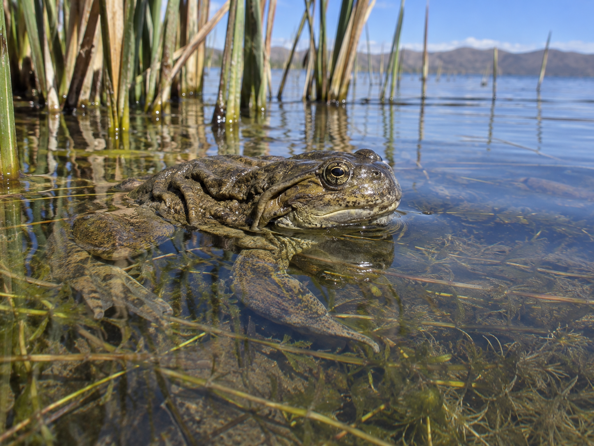

Investigar con evidencias
Plantear preguntas, observar, organizar información y comunicar conclusiones basadas en evidencias.
Rosaspata · 4.º A · Biología
Reina, esta ruta de aprendizaje te invita a observar, preguntar y descubrir cómo se relacionan los seres vivos con el lugar que compartimos.
Tu propósito de aprendizaje
En tres meses desarrollarás tres competencias de Ciencia y Tecnología: investigar con evidencias, explicar los fenómenos de la vida y proponer soluciones para cuidar el entorno.
Plantear preguntas, observar, organizar información y comunicar conclusiones basadas en evidencias.
Explicar procesos de los seres vivos y relacionarlos con la biodiversidad, la Tierra y el ambiente.
Proponer y evaluar una solución tecnológica sencilla frente a una necesidad del entorno.
Una semana, un nuevo descubrimiento
3 meses · 12 módulos · 1 módulo por semana.
Cada semana cierra con una evidencia para mostrar lo que comprendiste.
Observar, reconocer y comprender los niveles de organización.
Transformar una observación cotidiana en una pregunta que se pueda investigar.
Observación, preguntas investigables, hipótesis, variables, registro y uso de evidencias.
Comparar células vegetales y animales y relacionar sus estructuras con sus funciones.
Membrana, citoplasma, núcleo, organelos; semejanzas y diferencias entre células.
Explicar cómo las plantas transforman energía y cómo las células la aprovechan.
Fotosíntesis: luz, agua y dióxido de carbono permiten formar glucosa y liberar oxígeno; respiración celular y transferencia de energía.
Describir cómo se organizan las partes de un ser vivo y cooperan para cumplir funciones.
Células, tejidos, órganos y sistemas; organización en plantas y animales; relación entre estructura y función.
Explorar nutrición, reproducción, herencia y cambio biológico.
Relacionar el intercambio de materia con las necesidades de plantas y animales.
Nutrientes y digestión; absorción de agua y minerales; transporte de sustancias en plantas y cuerpo humano.
Explicar cómo la reproducción permite la continuidad de las poblaciones.
Reproducción sexual y asexual; polinización, semillas, dispersión y ciclos de vida de plantas y animales.
Relacionar el ADN con la transmisión de características y la diversidad entre organismos.
ADN, genes y cromosomas; información hereditaria; semejanzas y variación entre individuos.
Explicar cómo la variación heredable y la selección natural producen cambios en poblaciones a lo largo de generaciones.
Variación, selección natural, adaptación y evidencias de evolución; ejemplos de ambientes de altura.
Conectar los aprendizajes con la diversidad de vida de Puno.
Reconocer cómo interactúan los organismos y los factores físicos en un ecosistema.
Factores bióticos y abióticos, hábitat, poblaciones y comunidades; lago Titicaca, totorales y puna.
Interpretar cómo circulan la energía y la materia en las relaciones alimentarias.
Productores, consumidores y descomponedores; cadenas y redes alimentarias; flujo de energía y ciclos de materia.
Analizar por qué la biodiversidad es valiosa y cómo las acciones humanas pueden afectarla.

Biodiversidad y hábitat; presiones como la contaminación y la pérdida de hábitat; cuidado de especies y ambientes del Titicaca.
Integrar lo aprendido para investigar un tema local y comunicar una propuesta responsable.
Pregunta investigable, fuentes confiables, registro de evidencias, conclusiones y diseño de una solución posible.
Tu cierre de ruta
Elige un aspecto de la vida en tu comunidad, reúne evidencias de forma segura y comparte una idea que ayude a comprenderlo o cuidarlo. Tu mirada también puede aportar a la ciencia.